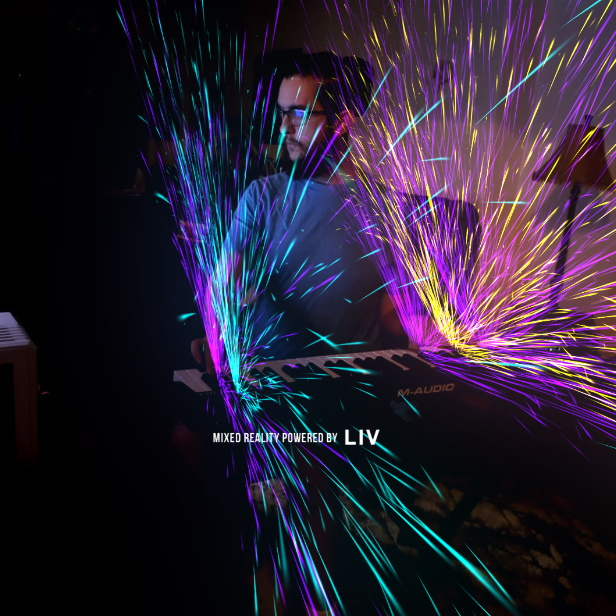

Mixed Reality and Music
Virtual Reality and Augmented Reality technology Meets Live Music. We are able to present musical portraits painted in real-time with the live music driving every visual change.
Learn moreVirtual Reality and Augmented Reality technology Meets Live Music. We are able to present musical portraits painted in real-time with the live music driving every visual change.
Learn more

Portraits of Change is an ongoing music-technology project that aims to cultivate live music through bold and unabashed innovation. Created and developed by Thomas Graves.
Learn more